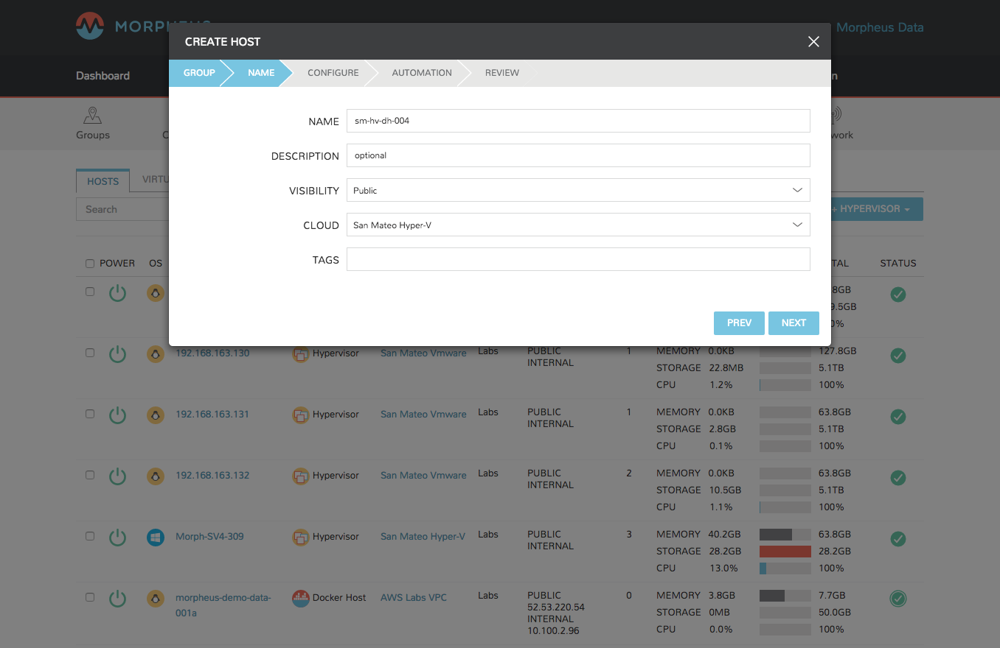

Docker Hosts¶
Overview¶
Morpheus can provision Docker Hosts into any cloud, convert existing Hosts to Docker Hosts, or even make itself a Docker Host.

To add a Docker Host to any cloud:¶
- Navigate to Infrastructure -> Hosts
- Click the +CONTAINER HOST button
- Select a container host type
- Select a Group
- Enter the following:
- Name
- Description
- Visibility
- Select a Cloud
- Enter tags (optional)
Then click NEXT.
- Configure the host options
- Select a Service Plan (Volume, Memory and CPU count fields may not be shown if selected service plan does not have custom options enabled).
- Add and set size the volumes
- Set memory size
- Set the CPU count
- Select a network
- Optionally configure the following:
- OS username
- OS password
- Domain name
- Hostname (default is the name previously provided for the container host)
. Then click the NEXT button
image::infrastructure/create_host_2.png[caption=”Figure 5: “, title=”Create Host”, alt=”Create Host”]
- Optionally add any Automation Workflows and configure for Backups.
[caption=”Figure 6: “, title=”Docker Host Automation”, alt=”Automation”]
- Review and click Complete to save
Your new container host will begin provisioning, and soon be running and ready for containers.